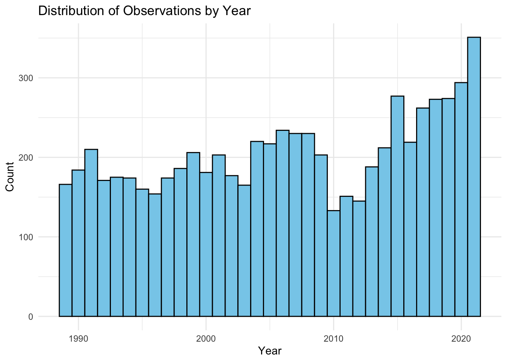
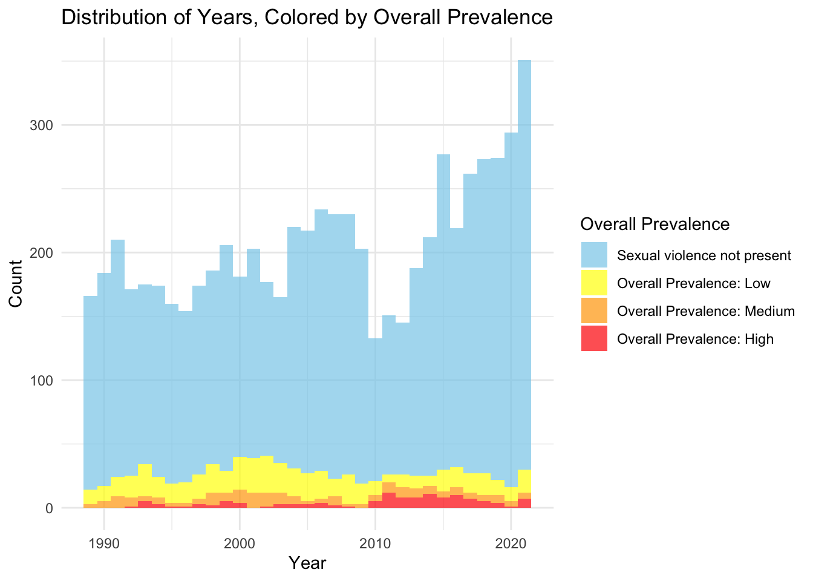
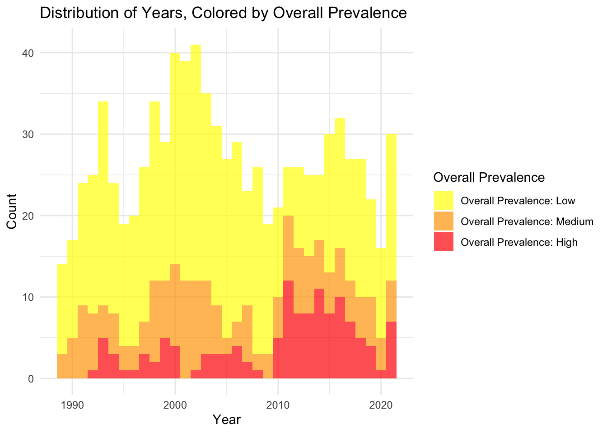
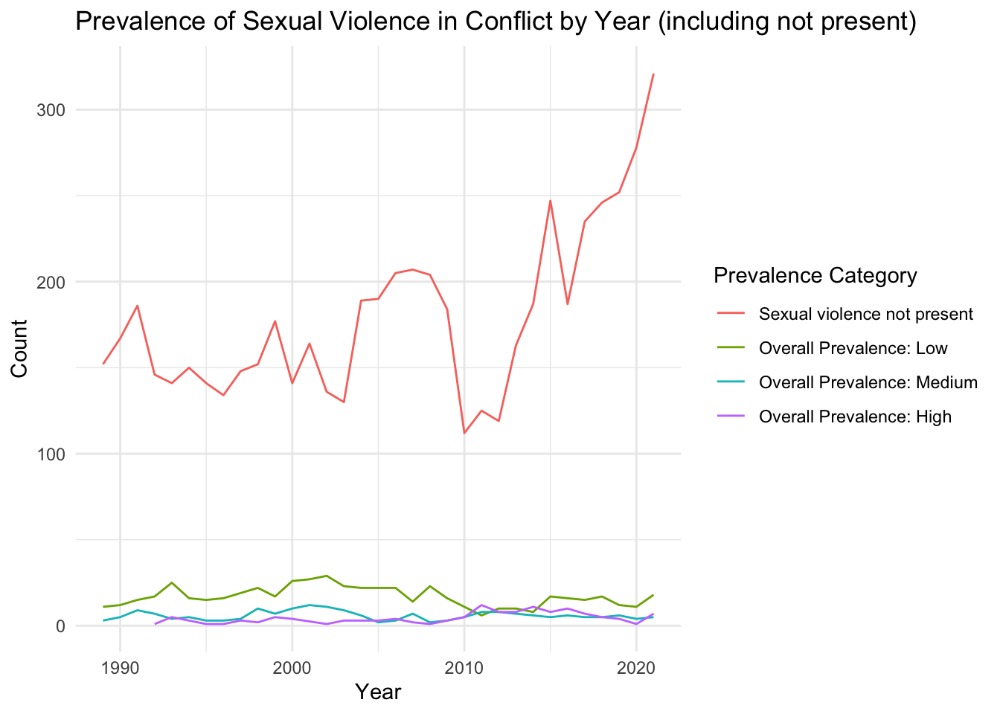

Rows: 8510 Columns: 29
── Column specification ────────────────────────────────────────────────────────
Delimiter: ","
chr (18): event_id_cnty, event_date, disorder_type, event_type, sub_event_ty...
dbl (11): year, time_precision, inter1, interaction, iso, latitude, longitud...
ℹ Use `spec()` to retrieve the full column specification for this data.
ℹ Specify the column types or set `show_col_types = FALSE` to quiet this message.
# A tibble: 6 × 2
Actor_Type n
<chr> <int>
1 Civilians 4255
2 External/Other Forces 170
3 Identity Militias 375
4 Political Militias 1839
5 Rebel Group 407
6 State Actor 1464
# to many individual civilian actions, remove themacled_sexual_violence <- acled_sexual_violence %>%filter(Actor_Type !="Civilians")
EDA for SVAC
Hisograms and Line Graphs
# Histogram by Yearggplot(SVAC, aes(x = year)) +geom_histogram(binwidth =1, fill ="skyblue", color ="black") +theme_minimal() +labs(title ="Distribution of Observations by Year", x ="Year", y ="Count")

# Histogram by year by overall prevSVAC %>%ggplot(aes(x = year, fill = overall_prev)) +geom_histogram(binwidth =1, position ="stack", alpha =0.7) +scale_fill_manual(values =c("Sexual violence not present"="skyblue","Overall Prevalence: Low"="yellow","Overall Prevalence: Medium"="orange","Overall Prevalence: High"="red")) +theme_minimal() +labs(title ="Distribution of Years, Colored by Overall Prevalence",x ="Year",y ="Count",fill ="Overall Prevalence")

# Histogram by year by overall prev without 0'sfiltered_SVAC %>%ggplot(aes(x = year, fill = overall_prev)) +geom_histogram(binwidth =1, position ="stack", alpha =0.7) +scale_fill_manual(values =c("Overall Prevalence: Low"="yellow","Overall Prevalence: Medium"="orange","Overall Prevalence: High"="red")) +theme_minimal() +labs(title ="Distribution of Years, Colored by Overall Prevalence",x ="Year",y ="Count",fill ="Overall Prevalence")

#### Now Line graphssummary_SVAC <- SVAC %>%group_by(year, overall_prev) %>%summarise(count =n(), .groups ='drop')ggplot(summary_SVAC, aes(x = year, y = count, color = overall_prev, group = overall_prev)) +geom_line() +theme_minimal() +labs(title ="Prevalence of Sexual Violence in Conflict by Year (including not present)",x ="Year",y ="Count",color ="Prevalence Category")

# SVAC filteredsummary_data_filtered <- filtered_SVAC %>%group_by(year, overall_prev) %>%summarise(count =n(), .groups ='drop')ggplot(summary_data_filtered, aes(x = year, y = count, color = overall_prev, group = overall_prev)) +geom_line() +theme_minimal() +labs(title ="Prevalence of Sexual Violence in Conflict by Year",x ="Year",y ="Count",color ="Prevalence Category")